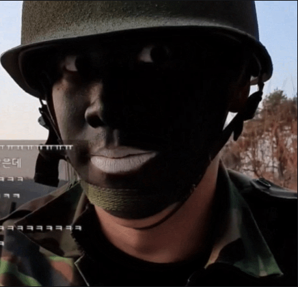

오킹도 논란의 중심에 섰던적이 있다. 한 야외방송 진행중 군대컨셉으로 방송을 진행했는데, 오킹은 이때 군복에 위장크림까지 바르며 디테일을 더했다.
논란은 이 위장크림을 바르는 방식에 있었다. 위장크림을 바르는 방식이 인종차별을 나타내는 '블랙페이스'와 유사했던것이다.
오킹은 이에대해 사과영상을 업로드했고, 트위치의 정지처분을 기다리고 있었지만 트위치는 오킹에게 징계처분을 하지않았다.

오킹은 못참고 트위치 본사에 자신을 정지시켜달라는 메일을 보냈지만 트위치는 아무런 반응도 없었다.
이에 오킹은 자진해서 1달간 자숙을 결심하고 1달후 방송에 복귀했다.